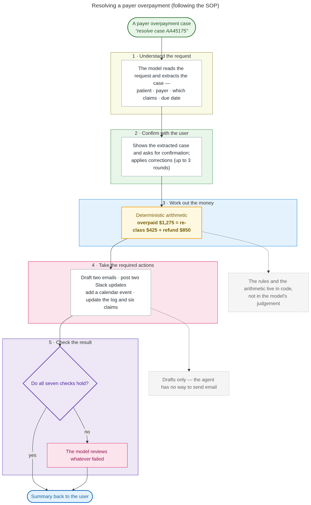
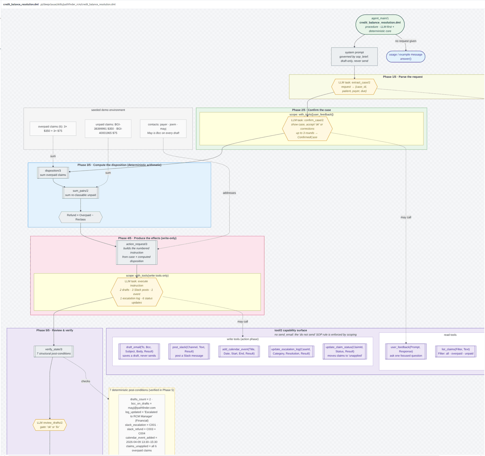

Executable specs
Specs become programs with guaranteed control flow, typed outputs, and constraints — not prose an agent may ignore.
Neurosymbolic AI for accountable agents
Turn SOPs and specs into agents you can audit.
DeepClause turns specs and SOPs into executable logic programs — deterministic rules for what must never go wrong, scoped LLM steps for the rest.
What it is
Specs become programs with guaranteed control flow, typed outputs, and constraints — not prose an agent may ignore.
One CLI from SOP to a versioned harness: procedures and policies as executable Skills.
Runs well on local models: deterministic control flow, scoped LLM steps, and a portable sandbox.
How it works
sop2harness compiles your SOPs into a harness —
procedures and policies as executable Skills. Drive those Skills directly
from a chat UI, or export them over MCP to Claude and other agents.
flowchart LR
SOPs[("📄 SOPs
Policies · procedures
and specs")]
S2H{{"⚙️ sop2harness
Compile into a harness"}}
Harness["🧩 Harness
Procedures and policies
as executable Skills"]
Chat["💬 Chat UI
Direct link to the Harness"]
Export["🔌 Executable Skills
Exported via MCP"]
Clients(["🤝 MCP ↔ Claude / others"])
SOPs --> S2H --> Harness
Harness -->|direct| Chat
Harness -->|export| Export
Export --> Clients
classDef source fill:#ffffff,stroke:#cac2b4,stroke-width:1.5px,color:#16181d;
classDef build fill:#eef6f7,stroke:#0a7a8c,stroke-width:1.5px,color:#075463;
classDef core fill:#0a7a8c,stroke:#075463,stroke-width:2px,color:#ffffff;
classDef deliver fill:#ffffff,stroke:#0a7a8c,stroke-width:1.5px,color:#075463;
classDef external fill:#111628,stroke:#111628,color:#e6f0ff;
class SOPs source;
class S2H build;
class Harness core;
class Chat,Export deliver;
class Clients external;
sop2harness
s2h compiles an SOP into one auditable harness of executable
Skills, versions it, and exports it as a self-hosted API, web chat, and MCP
server. Authoring happens in a pi session; the runtime is deterministic DML.
Deterministic spine
Amounts, thresholds, and deadlines are computed in DML — never judged by the model.
Agentic leaves
Reading and drafting run as LLM steps with only the tools that phase allows.
Verified & explainable
A run records every rule, tool call, and model step, so the result can be re-checked and explained — not just taken on trust.
Nothing is accepted because the model said so: the policy is a program you can read, and every run leaves a trace you can audit.


Built for regulated work
When an agent moves money or touches regulated data, “the model said so” is not an answer. Encode each vertical's SOP as an auditable harness with deterministic rules, scoped tools, and a full trace.
Every step is recorded; --trace writes a run record for review.
Policies live in version control and go through code review.
Tools are scoped per phase. Prohibited actions have no capability.
Local or on-prem models; network egress off by default.
Monetary and eligibility logic produces the same result every run.
Generated diagrams show reviewers the policy and its limits.
Local & secure
Deterministic DML carries the control flow, so a small local model only has to handle the scoped steps.
Secure code execution thanks to a sandboxed WebAssembly logic core.
Because DML gives each run a deterministic control flow, the model only has to handle scoped steps — so smaller local models go further. Point DeepClause at Ollama, vLLM, LM Studio, or any OpenAI-compatible server, and your data stays on the machine.
Measured lift. On DeepPlanning travel planning, DeepClause raised a 35B local model from 22.2% to 42.9% composite and from 82.5% to 98.3% task delivery.